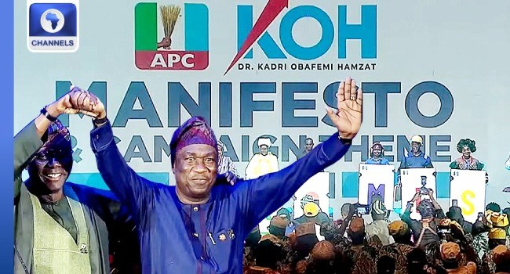

[VIDEO] 2027: Hamzat Unveils Manifesto,100 Pledges For A More Prosperous Lagos

Obafemi Hamzat, the All Progressives Congress candidate for Lagos State governor in the 2027 general elections, has unveiled a manifesto containing 100 pledges. Speaking at the launch at the Wole Soyinka Centre in Iganmu on Friday, the deputy governor said he would continue a progressive vision aimed at making Lagos more prosperous. He described children as central to his plans and said the commitments would be delivered.
Among the proposals, Hamzat pledged to add 580 hospital beds to expand access to health care. He also promised improvements to roads and transport, including activating the Fourth Mainland Bridge project. He said the state was pursuing a university of medicine to help young Nigerians pursue careers in the health sector.
The manifesto also includes plans to strengthen teacher development and review compensation for Lagos workers. Hamzat said his proposed administration would seek to reduce food costs from farm to table and equip young people with skills for current and future needs. Other pledges include cheaper broadband, improved security and more room to build.
Governor Babajide Sanwo-Olu praised Hamzat’s record of public service at the event. He recalled that Hamzat set aside his own governorship ambition in 2018 in support of him, and said Lagos would experience a transition between administrations without rancour.
Source: Channels TV